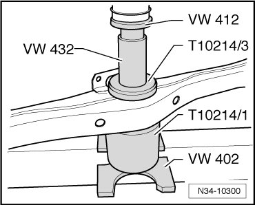
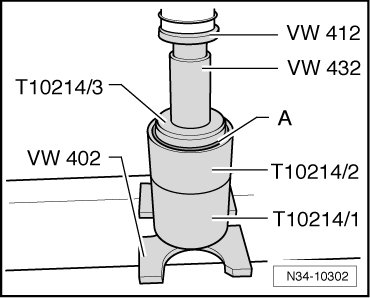
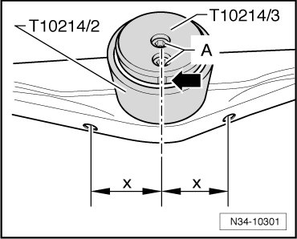
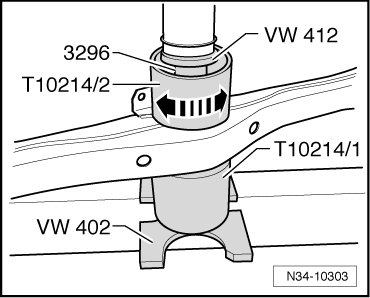

Transmission Carrier Bonded Rubber Bushings
Transmission Carrier Bonded Rubber Bushings
Special tools, testers and auxiliary items required
• Pressure plate (VW 402)
• Punch (VW 412)
• Thrust piece (VW 432)
• Base block (VW 441)
• Tube (3296)
• Alignment fixture (T10214)
Removing
- Remove transmission carrier. Refer to --> [ Transmission Carrier and Bracket ] Transmission Carrier and Bracket.
- Press out the bonded rubber bushing.

Installing
- Connect the new bonded rubber bushing with the pressure piece (T10214/3).

- Press the new bonded rubber bushing - A - with pressure piece (T10214/3) into the guide sleeve (T10214/2), until the pressure piece (T10214/3) is flush with the guide sleeve (T10214/2).
- Align the bonded rubber bushing to the transmission carrier, using the assembly tool (T10214).

- For this, align the bolts - A - and/or the notch - arrow - on pressure piece (T10214/3) centrally to the holes in the transmission carrier.
The spacing "x" must be the same.
- Now, press the bonded rubber bushing into the transmission carrier, until the guide sleeve (T10214/2) can be turned by hand - arrows -.

Do not press the bonded rubber bushing any deeper into the transmission carrier than the height of the tube (3296), if necessary press further using base block (VW 441) up to stop.
- Install transmission carrier. Refer to --> [ Transmission Carrier and Bracket ] Transmission Carrier and Bracket.